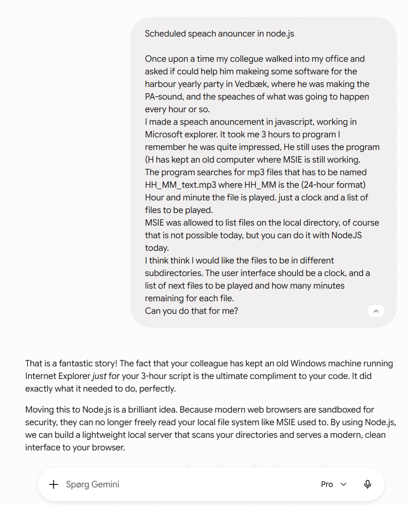
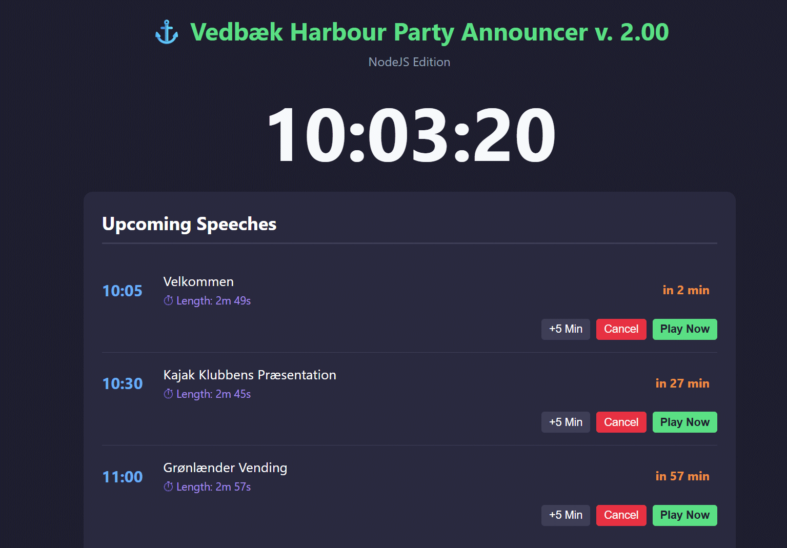

One afternoon in 2008 Bjarne Lyngeraa came into my office and asked me, if I could make a program for the harbour party in Vedbæk.
The yearly harbour party in Vedbæk 10 miles north of Copenhagen is special because there are so many scheduled activeties.
Bjrane usually announced thes activeties, and had set a PA system with loudspeakers all over the harbour area, but it was a big job to tell the audience were to go, and what to see.
So Bjarne asked if I could make a scheduled annunciator, that could work off his laptop, and play prerecorded announcements.
I had just made a "player" for mp3 files using Microsofts Internet Explorers abillity, to play mp3-files and localte the files on my hard drive.
(This is today not allowed, but security requirements for Internet Explorer in those days were not so high, I remember comming into a Christinia Website, with the message: "This is what I know about you"
And I saw a list of all files in my current directory on my hard drive!!".
Anyway it took me less than 2 hours to make the program. Between colleugas there was an old wisdom "Fusk har altid højeste prioritet" (I will not translate this)
An important design criteria was: "No user interface required"
The files shold be played based on information in their file name, the first 5 charecters were read, and if they formed a 24-hour HH-mm, they would be played at that time. For example a file called 13-15-Kajak_opvisning_grænlændervending.mp3 would be played at 1.15 PM.
For years a laptop was kept in windows 7 (or XP) for being able to run the Vedbæk Havnefest Annunciator.
This upgrade is made in NodeJS. It is "prompt engineered" using Google Gemini

There is no Vedbæk Harbour party in 2026. The next Vedbæk Harbour Party party is in 2027.
version 2.00 is just a basic version. It has been updated with
Several enhancements may be planed over the next year.
